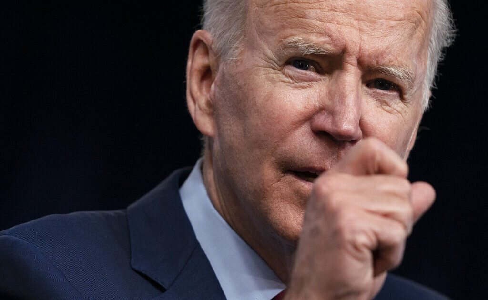

Biden suggests only vaccinated can celebrate 4th of July, accuses non-masked Americans of ‘spreading virus’
OAN Newsroom
Joe Biden appeared to endorse the idea of segregating American society based on COVID vaccination records.In a video address Tuesday, Biden appeared to suggest only vaccinated Americans would be able to celebrate the Fourth of July and participate in other public events.
Despite the progress we’re making as a nation, I want every American to know in no uncertain terms that the fight against COVID-19 isn’t over.pic.twitter.com/gZTkXC7czX — President Biden (@POTUS) April 6, 2021
'So you’re able to get in the backyard with a small group of people, friends and neighbors, and celebrate Independence Day because you’ve been vaccinated,' Biden stated.
BIDEN: 'Too many Americans are acting as if this fight is over.It is not… If the American people continue to do their part, mask up, practice social distancing, we could have a more normal July 4th.But this is still April, not July.'pic.twitter.com/tGGlftjAnO — Daily Caller (@DailyCaller) April 2, 2021
Biden also condemned those who reject the vaccine, stirring further concerns about their possible segregation from social life.The threat came a day after former Texas Congressman Ron Paul (R) criticized the idea Americans need to get a shot just to participate in basic society.
'Vaccine passports' must be stopped.Accepting them means accepting the false idea that government owns your life, body and freedom.pic.twitter.com/nmlP2SN6iw — Ron Paul (@RonPaul) April 5, 2021
Paul asserted the government has been wrong since day one, adding the mandated lockdowns amounted to an aggressive overreach of an already too-powerful federal government.
'That solidifies, you know, the whole concept that our life belongs to the government,' Paul said.'I always said the military draft and was a symbol of who owns our body, and the Internal Revenue Service, because they own everything and allow you how to spend it'
He went on to say it would also be wrong to suggest compliance with a medical procedure is the only hope of regaining basic liberty.
'Hopefully that the people finally wake up and say ‘that’s enough,'' Paul added.'I am not going to put up with a passport, you know, identifier in my body.'
Paul called on Americans to speak out against the White House’s seemingly never-ending string of coronavirus orders.He stressed how time is running out.
Posted On: 2021-04-07T00:00:00

Content Date: 2021-04-07
Download Date: 2021-04-16
Document ID: L0C049YYL